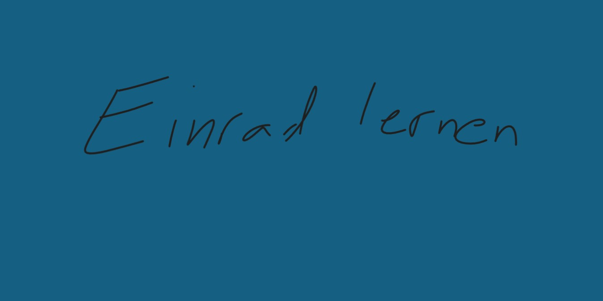
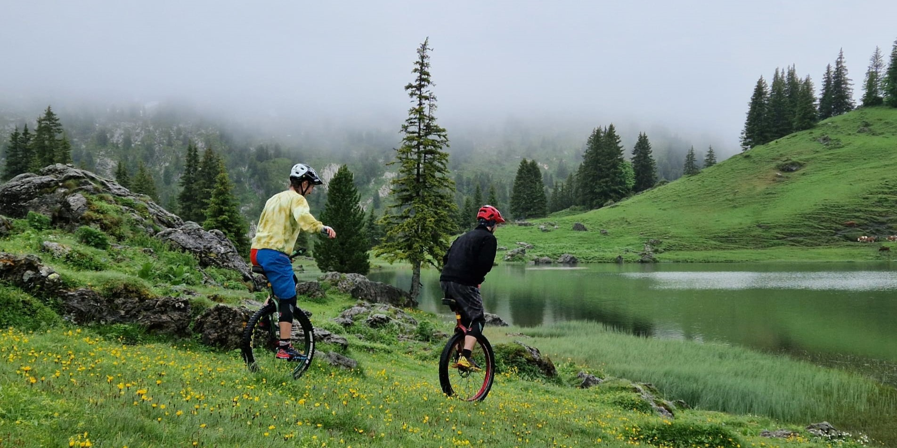
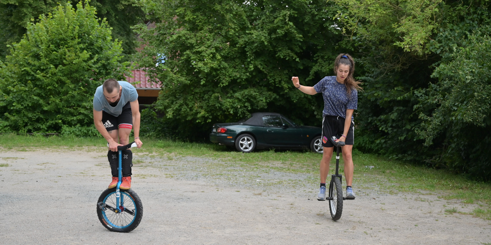
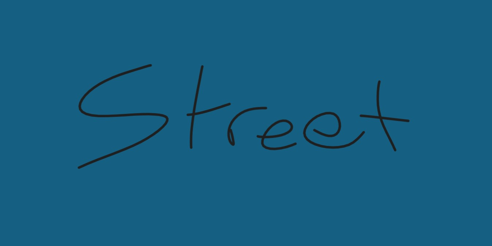
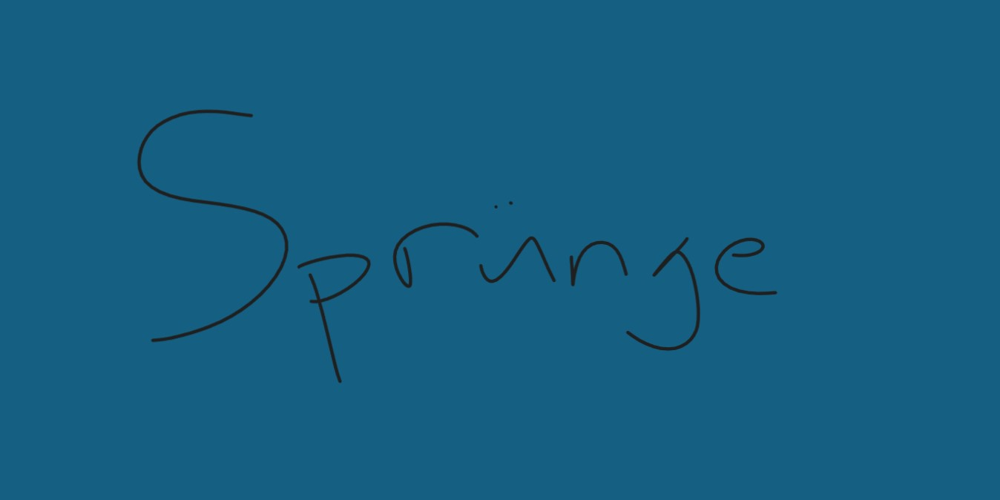
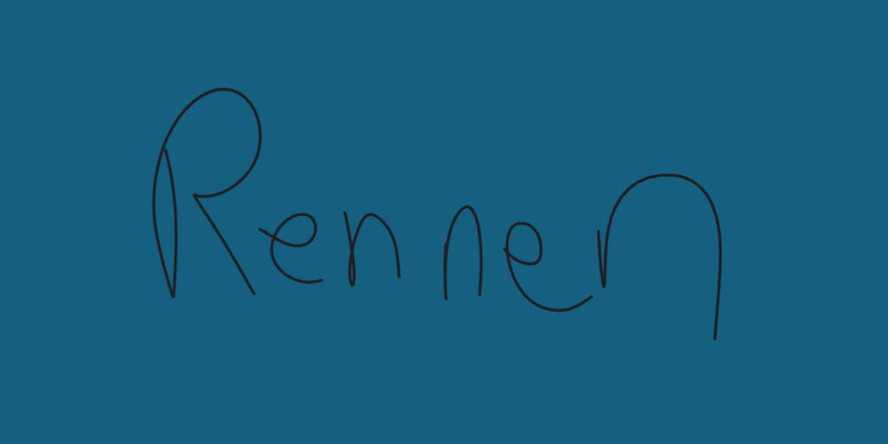
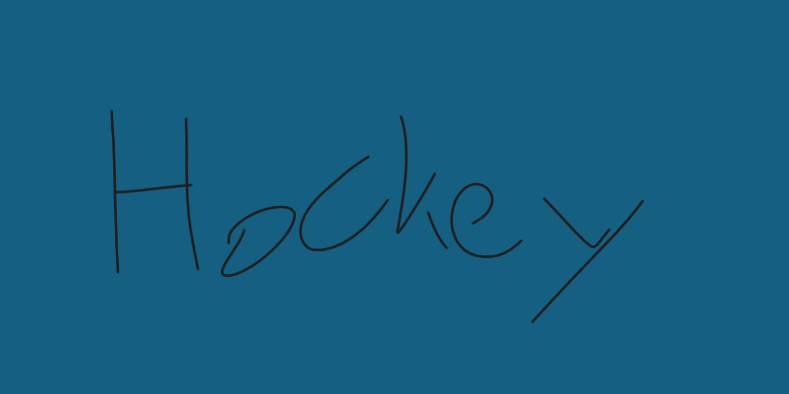
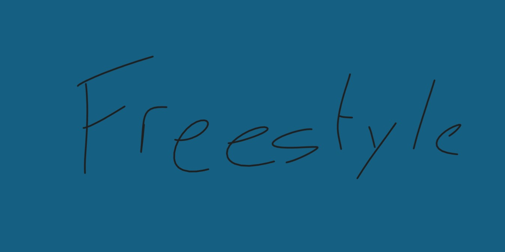

Der Einradsport
Der Einradsport ist so vielfältig, wie die Menschen die ihn lieben. Die Spannbreite von Disziplinen ist riesig und umfasst so viel mehr als nur Zirkus und Balance-Spielzeug. Von Einradhockey, zu Hochsprung, zu Downhill, zu Langsamfahren, zu krassen Tricks und 100km Rennen gibt es kaum etwas was es nicht gibt.
Auf dieser Seite geben wir dir einen kleinen Überblick über die grosse Welt auf einem Rad (World on One Wheel)
Einradfahren lernen
Einradfahren sieht erst einmal beeindruckend aus, mit ein bisschen Hingabe können das jedoch alle lernen. Wichtig zu beachten
ist allerdings das hohe Suchtpotential.
Zum Üben sucht man sich eine Stütze, am besten ein Mensch. Ein Geländer oder eine Mauer tuts aber auch. Noch besser sind
zwei auf beiden Seiten. Zu Beginn braucht es sehr viel Hilfe um überhaupt erst aufs Einrad zu kommen und oben zu bleiben.
Mit der Zeit wirst du merken, dass du die Stütze immer weniger brauchst und schon bald loslassen kannst!
Der Aufstieg
Die erste grosse Hürde ist der Aufstieg. Dabei ist wichtig, dass du den ersten Fuss auf das Pedal setzt, welches näher bei dir ist. Mit dem Sattel zwischen den Beinen und der Hilfe einer Stütze, verteilst du nun langsam dein Gewicht auf das Pedal und den Sattel und setzt den zweiten Fuss auf das zweite Pedal. Wenn du bereits frei fährst, kannst du dich an den freien Aufstieg wagen. Diesen übst du am besten in leicht fallendem Gelände.
Wie gehts weiter?
Einradfahren gelernt und aufsteigen klappt auch? Die Welt des Einradfahren steht dir offen! Vielleicht fangst du mit ein paar Kurven an. Oder du lernst zu springen. Oder Stufen runterzufahren. Oder rückwärtsfahren. Oder oder oder... Es gibt keinen Lehrplan, mach das worauf du Lust hast. Vielleicht findest du unter den vielen Disziplinen des Einradsports Inspiration.
Disziplinen
Muni: Mountain Unicycling
Muni steht für Mountain Unicycling auf Deutsch Bergeinradfahren, vergleichbar mit dem Mountainbike. Muni umfasst jegliches Einradfahren abseits der Strassen, ob hoch (Uphill) oder runter (Downhill), beides (Cross Country), mit künstlichen Hindernissen (Cyclocross) oder lange Touren (Munipacking). Der Reiz des Muni-fahren ist das Abenteuer, die Freundschaften und die Natur. Das Ziel ist es, mit Freunden möglichst schwierige, lange und hohe Touren zu unternehmen und dabei viel Spass und Ausgelassenheit zu erleben, da sind Wettkämpfe völlig zweitrangig.
Urbane Disziplinen
Trial
Im Trial werden Hindernisse mit dem Einrad überwunden. Dabei wird auf und über alle möglichen Objekte wie Paletten, Balken, Stangen, Traktorreifen und Autos gefahren und gesprungen. Bei Wettkämpfen ist ein riesiger Spielplatz aus solchen Hindernissen aufgebaut mit verschiedenen Lines für welche jeweils ein vorgegebener Pfad gegeben ist und je nach Schwierigkeit Punkte gibt. Weltmeister und Kinder treten alle auf dem gleichen Terrain an, und haben alle 90 Minuten Zeit um so viele Lines wie möglich zu absolvieren. Doch um Trial zu machen braucht man keinen riesigen Trial Park. Mit ein bisschen Kreativität kann jede Mauer, jede Treppe und jeder Stein zu einer Trial-Line werden.

Flatland
Im Flatland werden beeindruckende und schwierige Tricks geübt und zu Kombinationen zusammengefügt. Die Tricks werden wie der Name schon sagt auf flachem Grund, meist Asphalt ausgeführt. Dabei dreht man das Einrad unter sich, sich selber auf dem Einrad, über dem Einrad, auch hier sind der Kreativität kaum Grenzen gesetzt. Im Wettkampf treten hier jeweils zwei Einradfahrer*innen gegeneinander in einem Battle an. Die Zuschauer sitzen rundherum und feuern sie an während eine Jury entscheidet wer der beiden in die nächste Runde kommt.
Street
Street kombiniert Trial und Flatland. Hierbei werden Tricks kreativ mit urbanen (städtischen) Hindernissen wie Treppen, Rails und Bänken, kombiniert. Oft wird Street in Skateparks geübt.
Sprünge
Beim Hochsprung wird mit dem Einrad über eine Stange oder auf einen Stapel Paletten gesprungen. Durch die optionale Nutzung der Kompression des Reifens können Höhen bis zu 140 cm erreicht werden! Beim Weitsprung gibt es die Variante auf der Bahn bei welcher man aus dem Fahren mit hoher Geschwindigkeit möglichst weit springt. Bei der Variante mit Paletten springt man mit kaum Anlauf von einer Palette zu einer anderen.
Bahn- und Strassenrennen
Bahnrennen finden auf der Tartanbahn, Strassenrennen auf normalen Strassen statt. Strassenrennen reichen von 10km Rennen über den Marathon bis vereinzelt 100km Rennen. Bahnrennen umfassen Kurzdistanzen (100m, 400m, 800m) sowie speziellere Disziplinen wie Slalom, Einbeinfahren, Langsamfahren und Stillstand.
Teamsport
Einradhockey und Einrad-Basketball sind die Hauptdisziplinen im Teamsport. Einradhockey wird in Teams von sechs mit Unihockey-Toren, Tennisbällen und Eishockeyschlägern gespielt. Die Teams sind meist alters- und geschlechtsgemischt. In der Schweiz gibt es einige Vereine und Teams (einradhockey.ch).
Freestyle
Freestyle ist die verbreitetste Disziplin und ist mit Eiskunstlauf vergleichbar. Verschiedene Tricks werden zu einer Kür kombiniert, die mit Musik und Kostüm in einer Halle geübt und aufgeführt wird. Wichtig sind korrekte, ästhetische Ausführungen der Tricks sowie fliessende Übergänge. Es gibt Einzel-, Paar- und Gruppen-Freestyle.
Zirkus / Show
Beim Zirkus oder in Shows hat die Wirkung eine grosse Wichtigkeit, schliesslich soll das gezeigte Beeindrucken! Oft werden
Weiteres
Wer noch mehr über den Einradsport lernen möchte, dem sind folgende Bücher, Websites und YouTubeChannels zu empfehlen!
Einräder
Es gibt unzählige verschiedene Einräder von ganz kleinen 12"-Räder zu grossen 36" Räder. Mit oder ohne Bremse, dicker oder dünner Reifen und in allen möglichen Farben.
Anfangen
Zum Anfangen braucht es noch kein krasses teures Einrad. Je nach Körpergrösse ist ein Einrad zwischen 16" und 24" üblich. Eine Bremse braucht
es keine, denn normale Einräder haben keinen Leerlauf.
Wer motiviert ist, dass Einrad vielfältiger zu nutzen, kommt schwer um ein spezifisches Einrad für die jeweilige Diszipliin herum.
- Muni: Munis haben grössere Räder (24"-29"), dicke Pneus, Bremsen und sind sehr stabil gebaut.
- Urbane Disziplinen: Für Trial, Flatland, Street und Sprünge sind stabile kleinere Einräder (19-20") mit dicken Pneus üblich.
- Strassen: Für grosse Distanzen sind grössere Räder (29-36") mit Bremsen geeignet. Bei grossen Portemonnaies liegt vielleicht sogar eine Schaltung (Schlumpfnabe) drin.
- Freestyle und Teamsport: Für Teamsport und Freestyle sind wendige 20" Räder gut. Für den Gebrauch in Hallen braucht es allenfalls einen hellen Pneu.